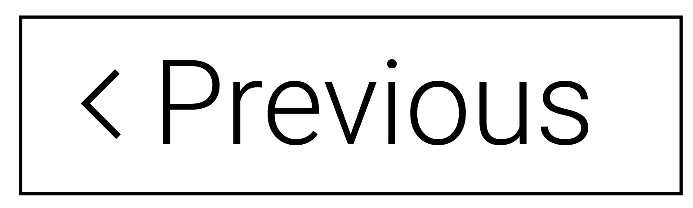
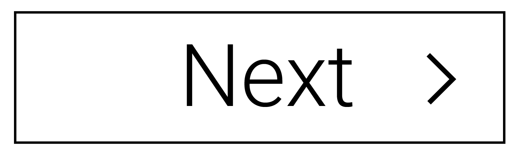
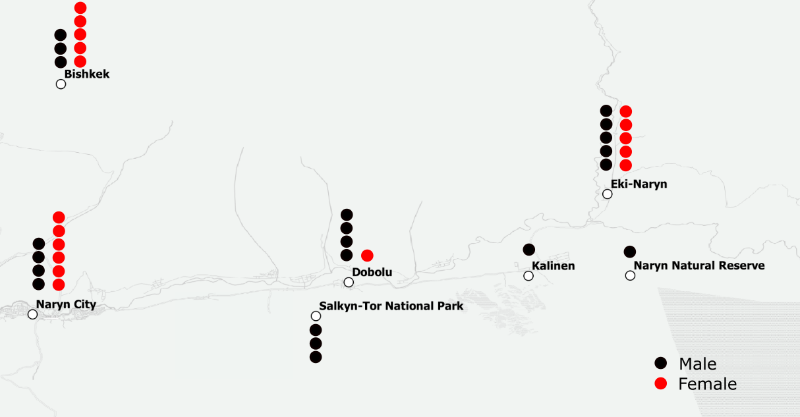

jasongeospatial.github.io/Naryn
develop.gcrc.carleton.ca:8050
Open Street Map
Kyrgyzstan Spatial
OSI Panthera
Information Resources of the Kyrgyz Republic
Election Analytic
Reach Initiative

1/5

Network Graphic
